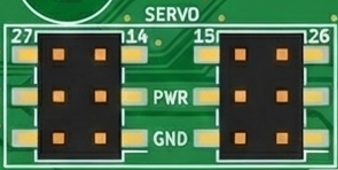
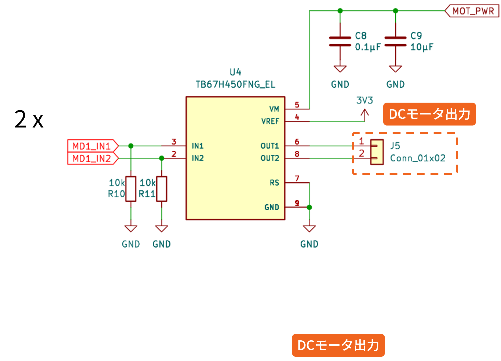
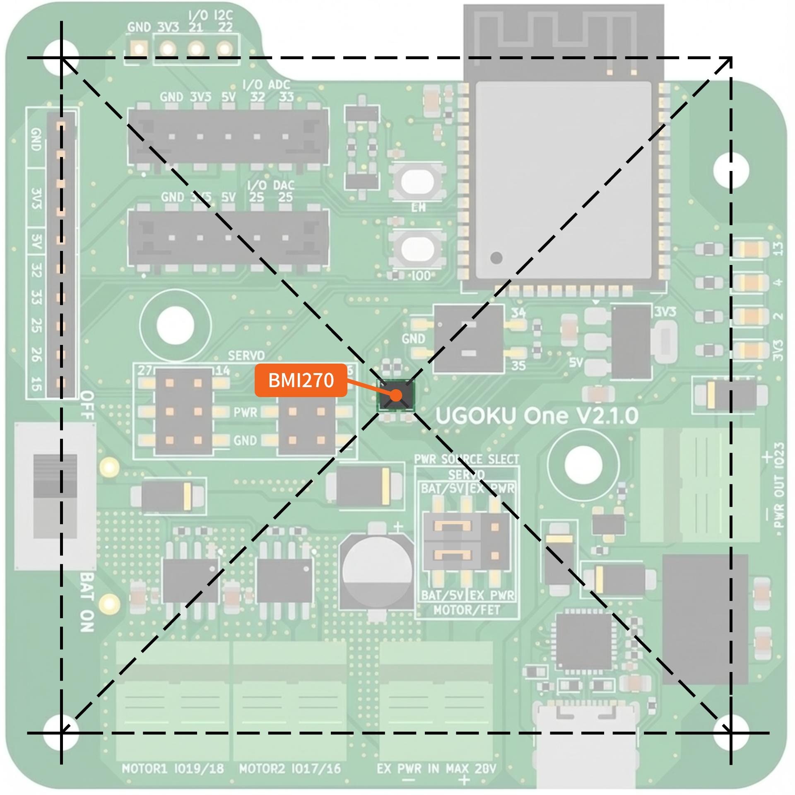
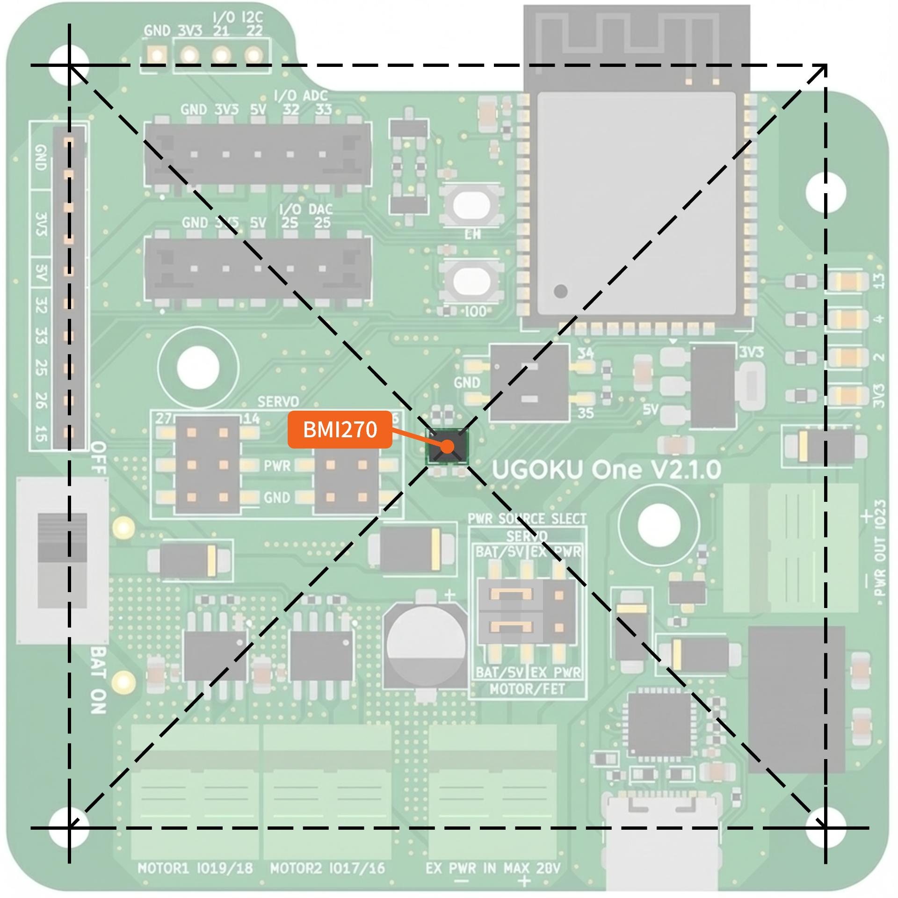

UGOKU One ユーザーガイド
はじめに
電源入力とアクチュエータ出力
概要

- UGOKU One への電源入力は主に単4電池、USB接続、外部電源入力 の3系統があります
- 単4電池とUSB接続はダイオードを介して5V系統に接続されています
- 外部電源入力はDC-DCコンバータとダイオードを介して5V系統に接続されています
- 単4電池の電源は単4電池電源スイッチでオン/オフが可能です

単4電池
単4電池は4本直列で使用します。電池ホルダは基板に実装済みです。
USB接続
USB接続は5V電源を供給します。PCやUSB充電器から給電可能です。
外部電源入力
外部電源入力は7〜24Vの直流電源を接続できます。2ピン端子台に接続します。 逆接しないように注意してください。
電源選択

ピンヘッダ上のジャンパの位置を変えることでアクチュエータを駆動する電力源を選択できます。
- アクチュエータに供給する電力は5V系統と外部電源入力の2つから選択できます
- サーボモータ出力とDCモータ/FET出力に供給する系統をそれぞれ独立して選択が可能です
- アクチュエータを単4電池を含む5V系統で駆動する場合はジャンパを左側に挿します
- 外部電源入力の電力で直接駆動する場合はジャンパを右側に挿します
サーボモータ出力

サーボモータ用の電源出力端子です。
DCモータ出力

モータドライブICTB67H303HGを2個搭載しています。
260クラス程度のモーターをを使ったロボットなどを動作させるのに必要な性能を備えています。
| 項目 | 2個同時使用時 | 1個のみ使用時 |
|---|---|---|
| 電圧 | 4.5 ~ 26V | |
| 連続電流 | 1.3 A | 1.5 A |
| 短時間電流 (90s*1) | 1.5 A | — |
| 短時間電流 (5s*1) | 2.0 A | 2.0 A |
| 瞬時最大電流 | 3.5 A (モータードライバIC最大絶対定格) | |
*1 時間はテスト結果より安全マージンを取った値です
FET出力

Nch MOSFET (SSM3K333R) によるローサイド出力です。
| 項目 | 仕様 |
|---|---|
| 電圧 | 4.5 ~ 26V |
| 連続電流 | 3.0 A |
| 短時間電流 (90s) | 6.0 A |
プログラムの書き込み
I/Oピン ユーザースイッチ
LED
IMU
 

6軸IMUのBMI270を搭載しています。
21, 22ピンからI2Cで接続します。
基板の中央に配置しています。
INT1, INT2ピンはSENSOR_VP, SENSOR_VNに接続されています。